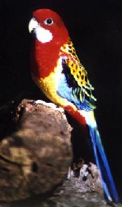
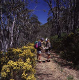
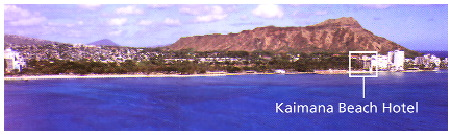
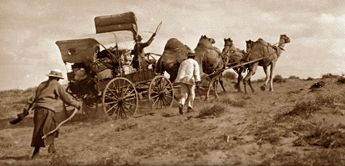
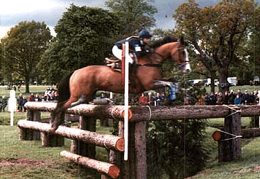

Steve and Kirsty's 1997 Christmas HomePage 

Wedding As most everybody knows we blew our respective fortunes on gold rings on January 4th by actually getting married. Spoilt as always, lots of our family and friends made long treks from around the world to share with us some summer sunshine, wonderfully sentimental words, and a little booze-up. The most important thing we learned was that it's very important to control uninvited guests at wedding ceremonies, especially the avian variety who insist on sitting in nearby trees and screeching at you at serious and emotional moments. The human variety just cause trouble at the reception.Travel

This year we moved significantly closer to our goal of having crossed every square inch of Pacific Ocean. Being traditional folks (and possessing a free flight stop-over) we spent two weeks in the Kingdom of Tonga following our January nuptials. Unfortunately, a tropical cyclone was on the same flight itinerary and kept us cosily drenched for the duration. We can report that Tongan prohibitions on ladies showing their knees and on scuba diving on a Sunday kept things interesting. While Steve headed back to Hawaii, Kirsty enjoyed four weeks of touring New Caledonia in a state of utter linguistic confusion. This helped her rapidly decide that the archipelago was not the place for 18 months of field research, but that the YHA in Noumea is very comfy. Next followed a good stretch of side trips from Honolulu: Kirsty remembered the delights of New York during a month at the university there, Steve fulfilled his competitive urges by trying to travel to more cities (such as Edmonton, Calgary, Palo Alto, Pittsburgh, San Francisco) in his search for a new job than anyone before, and we both enjoyed a return appearance across the US in late July. En route to Canberra in September, we dropped in on the Woods in Melfort. Steve couldn't resist a few days mid-holiday in Pittsburgh, but Kirsty enjoyed learning the intricacies of combine harvester operation ... okay she went for a ride one afternoon.
Hawaii
Yes, it's true, we really did spend a wonderful twelve months in Hawaii and decided to leave for other pastures. Yes, Steve takes the prize for finding us, in January, a wonderful apartment with swimming pool and lanai, right on the ocean. Yes, we spent way too much time (or not nearly enough depending on your perspective) snorkelling, swimming, and building sand castles. Highlights were night-diving with blue and yellow moray eels off the North Shore, battling swell, breaching whales and nausea on a sail from Honolulu to Maui, and learning how to balance command structure in a marriage with gusts of trade winds in order to keep a 15ft sailboat upright. Yes, we will miss friends, climate and fun in Hawaii tremendously which is why we shall be visiting next year.

Work Stuff

Alright it almost seems like we're behaving like people
with careers. Steve's great contribution this year was to deplete
the world's paper resources by co-authoring a book based on his PhD thesis
(yes, please rush out and buy a copy!) and publishing a number of significant
papers on software engineering, re-engineering and program understanding
(more explanation will cost you). Together with some of his
co-conspirators he's also started a company that has yet to sell anything
or make any money, but what an idea! In September, his post-doctoral
year at Uni. of Hawaii came to a tearful close and he

Important Goings-On In early November, we acquired a new addition to the family ... a very tall chestnut equine called Mr McEnroe. So far he hasn't displayed the temperament of his namesake but is keeping Kirsty busy riding early in the morning and doing stablework late into the evening. If all goes according to plan, they'll start competing at low-level eventing (that's jumping and dressage to the non-horsey) competitions early next year. Steve spent a few hours in Sept/Oct re-acquainting himself with the joys of coaching and playing hockey in Canberra, and we've also been doing a little hiking, a little touring around and quite a bit of just generally lazing about.Next
Come January 6th, everybody must observe a moment of
silence as we start the unpleasant experience of living in different hemispheres.
Come January, Steve starts a new job as a member of the technical staff
at the Software Engineering Institute in Pittsburgh, Pennsylvania.
Much to our surprise Pittsburgh boasts tree-lined streets, green hills
and 19th century style architecture rather than belching steel mills, coal
mines and stooped sooty inhabitants, but still. The SEI is a US government
institution which provides advice on building and changing software to
US govt. and industry. Impressive, huh! Kirsty will spend her
days at the National Museum annoying people with difficult questions and
accumulating obscure government documents so that she can write some
esoteric and very intelligent papers. This phase will hopefully wrap
up in about September when she can relocate to Pittsburgh, lock herself
in a room and produce a lot of words that can be summarized as Ph.D.
Before all this starts, however, we will enjoy a Christmas week at the
South Coast with the Wehners. Watch out jellyfish!
Merry Christmas and we both hope to see you in the New Year!! Stay in touch.
Our homepage lives (for now) at www.spectra.eng.hawaii.edu/~sgwoods/